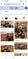

Curiosity, Sub consciousness and analogy
If self-preservation and optimisation of biological resources is part of our base animal brain function, it seems obvious that our neural system uses analogy as a preservation and optimization tool by try to fit past experiences and stimulus into the new we are actually living and working with. This sound for me like this is the core level of differentiation between us and the animals kingdom because we do have way more ability to achieve this than our animal peers. Given this statement experiencing a lot and navigating from domain to domain to domain is the best path for finding new efficient and smart things than focusing in one only.
Be curious so have more value than stay focused unless your focus is about curiosity.
